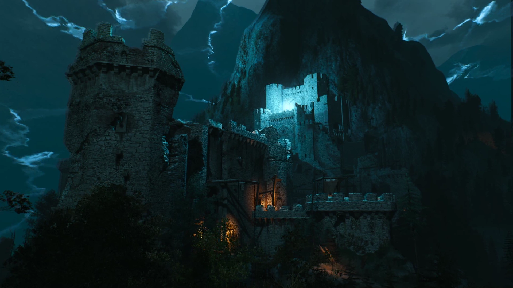

Welcome to Kaer Morhen!
From there they could see the ruins of Kaer Morhen huddled against the stone precipices - the partially demolished trapezium of the defensive wall, the remains of the barbican and gate, the thick, blunt column of the donjon.